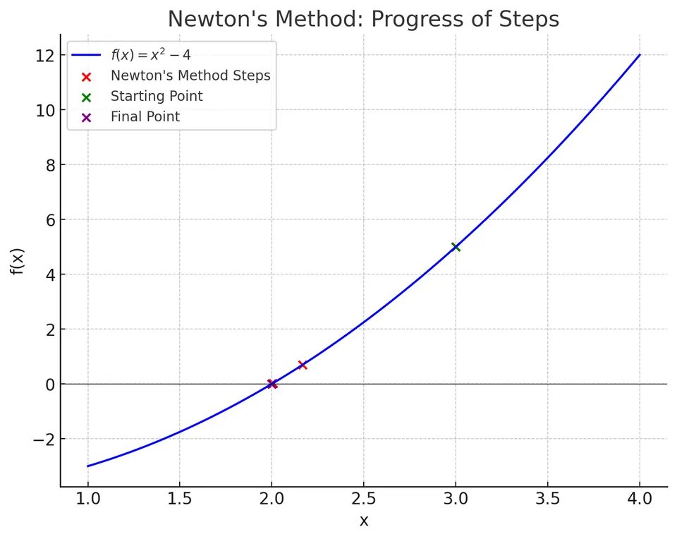

Newton's method (or the Newton-Raphson method) is a powerful root-finding algorithm that exploits both the value of a function and its first derivative to rapidly refine approximations to its roots. Unlike bracketing methods that work by enclosing a root between two points, Newton's method is an open method, requiring only a single initial guess. When it does converge, it does so very quickly, often achieving quadratic convergence. However, the method offers no guarantees of convergence from any arbitrary starting point, and it requires that you can compute (or approximate) the derivative of the function.
Physically and geometrically, Newton's method can be viewed as follows: starting from an initial guess $x_0$, you draw the tangent line to the curve $y = f(x)$ at the point $(x_0, f(x_0))$. The intersection of this tangent line with the $x$-axis provides a better approximation to the root than $x_0$, assuming certain conditions on the function and the initial guess. Repeating this procedure iteratively refines the approximation.
Conceptual Illustration:
Imagine the curve $f(x) = x^2 -4$:

At $x_0 = 3$, the tangent line is drawn. Its intersection with the x-axis is the next approximation $x_1$. Repeating this yields even better approximations rapidly converging to the exact root $x=2$.
Let $f:\mathbb{R} \to \mathbb{R}$ be a differentiable function. We wish to solve:
$$f(x) = 0$$
Newton's method starts with an initial guess $x_0$ and generates a sequence $\{x_n\}$ defined by:
$$x_{n+1} = x_n - \frac{f(x_n)}{f'(x_n)}$$ where $f'(x)$ is the first derivative of $f(x)$.
Geometric Derivation:
Consider the first-order Taylor expansion of $f$ around $x_n$:
$$f(x) \approx f(x_n) + f'(x_n)(x - x_n)$$
If $x$ is the root we want (i.e., $f(x)=0$), we set the above approximation to zero and solve for $x$:
$$0 = f(x_n) + f'(x_n)(x - x_n) \implies x = x_n - \frac{f(x_n)}{f'(x_n)}$$
This gives the iterative scheme for Newton’s method.
I. Assumption of Differentiability:
We assume $f$ is at least once differentiable near the root. This allows us to use local linearization.
II. Local Linear Approximation:
Near a guess $x_n$, write:
$$f(x) \approx f(x_n) + f'(x_n)(x - x_n)$$
III. Solving for the Root of the Linear Approximation:
Set $f(x)=0$ in the linear approximation:
$$0 \approx f(x_n) + f'(x_n)(x - x_n)$$
Hence:
$$x \approx x_n - \frac{f(x_n)}{f'(x_n)}$$
IV. Iteration:
Define:
$$x_{n+1} = x_n - \frac{f(x_n)}{f'(x_n)}$$
As $n \to \infty$, if the sequence converges, $x_n \to x^*$ where $f(x^*)=0$. Under suitable conditions (e.g., if $f$ is well-behaved and the initial guess is sufficiently close to the actual root), Newton's method converges quadratically to the root.
Input:
Initialization:
Set iteration counter $n = 0$.
Iteration:
I. Evaluate $f(x_n)$ and $f'(x_n)$.
II. If $f'(x_n)=0$, the method cannot proceed (division by zero). Stop or choose a new $x_n$.
III. Update:
$$x_{n+1} = x_n - \frac{f(x_n)}{f'(x_n)}$$
IV. Check Convergence:
V. Increment $n = n+1$ and repeat from step I.
Output:
Function:
$$f(x) = x^2 - 4.$$
Known Root:
$x=2$ satisfies $f(2)=0$.
Apply Newton's Method:
$$f'(x) = 2x.$$
Iteration 1:
$$x_1 = x_0 - \frac{f(x_0)}{f'(x_0)} = 3 - \frac{5}{6} = 3 - 0.8333 = 2.1667$$
Iteration 2:
$$x_2 = 2.1667 - \frac{0.6945}{4.3333} \approx 2.1667 - 0.1602 = 2.0065$$
Iteration 3:
$$x_3 = 2.0065 - \frac{0.0260}{4.013}\approx 2.0065 - 0.00648 = 2.0000$$
After a few iterations, we have $x_3 \approx 2.0000$, which is very close to the actual root $x=2$.